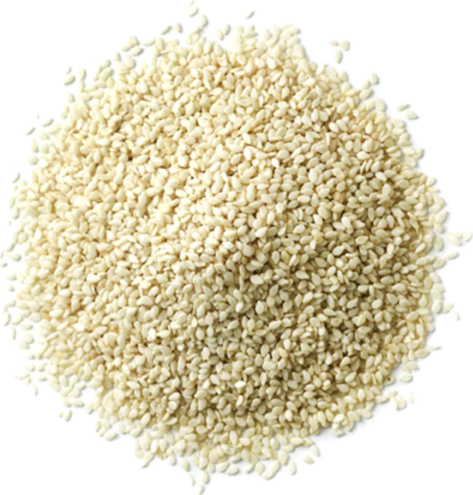

Sesamum indicum
Overview
Sesame is a flowering plant in the Pedaliaceae family, native to sub-Saharan Africa and India. It produces small, flat seeds that are rich in oil and have a nutty flavor and crunchy texture. Sesame seeds are commonly used as a culinary ingredient and condiment in cooking and baking.
Cultural Overlap
Sesame seeds are used in cuisines around the world, particularly in Asian, Middle Eastern, and Mediterranean cuisines. They are used to flavor bread, pastries, cookies, desserts, sauces, salads, and stir-fries. Sesame seeds are also used to make tahini, a paste used in Middle Eastern cuisine. Additionally, sesame seeds have cultural significance in traditional medicine and folklore, where they are believed to have various health benefits and symbolic meanings.